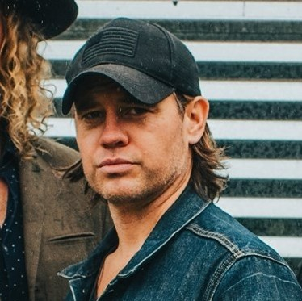

Sign up to become an official Wayland Warrior today!

Mitchel Arnold, Lead Singer
Phil Vilenski, Lead Guitarist
Joey Champagne, Bassist
Ryan Tant, Drummer
"Every bit the consummate performers, Wayland's set was nothing short of amazing. With powerful vocals and harmonies that rival those of the Eagles, they blistered through a set of power filled rock. On a personal level, every member is great to talk to. They are genuine, fun loving guys. Everyone that is a fan of power rock with real vocals should listen to a set. You will become a fan!"
-Some Guy Named Brian
See More Testimonials
Click the Button to see upcoming events and testimonials from real fans!